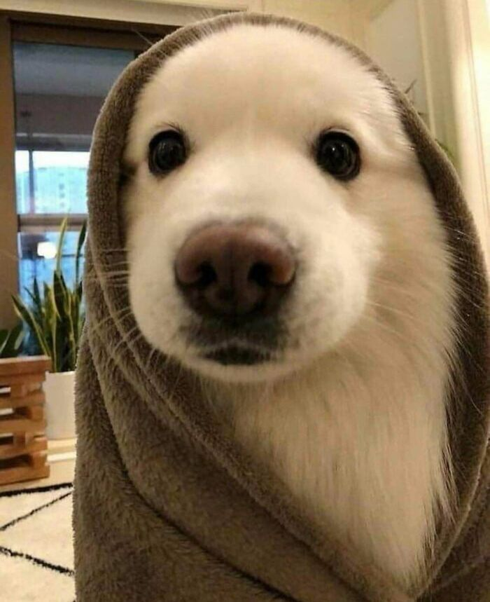

Pet pictures





Pawsitively Yours: Adopt, Love, Cherish.
Welcome to Pawsitively Yours!We are a haven for pet lovers and animals alike, a place where compassion meets action, and every wag of a tail or soft purr tells a story of hope.
At Pawsitively Yours, we believe in the magic of companionship that only a pet can provide. Founded with a vision of creating a world where no animal is left without a home, our organization has grown to become a beacon of hope for thousands of pets and families alike. We are not just a pet adoption agency; we are a community of animal lovers who are passionate about making a difference. From the moment you step through our doors or visit us online, you will see the dedication we have to rescuing, rehabilitating, and re-homing animals in need
Changing Lives, One Adoption at a Time at Pawsitively Yours, we see every adoption as a story of transformation—for both the pets and their new families.
At the heart of Pawsitively Yours is a simple but profound mission: to create a world where every animal is valued, cared for, and loved. Every year, millions of pets are left homeless, many of whom face uncertain futures. Our mission is to change this narrative by offering these animals a second chance at life. We aim to bridge the gap between pets in need and families who can provide them with the love, care, and stability they deserve. By rescuing animals, rehabilitating them when necessary, and finding them loving homes, we are actively working to create lasting change in the lives of both pets and their new owners.
Our work extends beyond adoptions. We educate our community about the importance of spaying, neutering, and responsible pet ownership. We also advocate for the adoption of older animals, those with special needs, and others who are often overlooked. Every step of the way, our efforts are driven by a desire to make a tangible difference, ensuring that no animal is left behind.
 We are a pet adoption agency dedicated to finding loving homes for pets in need. Our mission is to connect furry friends with families who will cherish them forever. Join us in creating heartwarming stories of companionship and care!
We are a pet adoption agency dedicated to finding loving homes for pets in need. Our mission is to connect furry friends with families who will cherish them forever. Join us in creating heartwarming stories of companionship and care!
Every pet deserves a second chance at life and love. We work tirelessly to rescue, rehabilitate, and rehome pets of all kinds, ensuring their health and happiness.
Feel free to reach out to us with any questions or inquiries. We're here to help you find your perfect furry companion!
Phone: +251912345678
Address: CMC, Addis Ababa
E-mail: petadoption@gmail.com